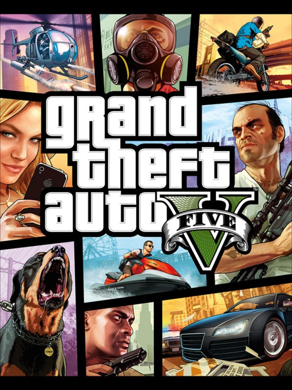

How to enter
Press ~ to open the console, type the code, press Enter.
Story mode only. A cheat turns off achievements and trophies for the session, and you can't save while one is active.

Press ~ to open the console, type the code, press Enter.
Story mode only. A cheat turns off achievements and trophies for the session, and you can't save while one is active.
Codes last checked against sources on .
Wrong or missing code? Use Report on the cheat, open an issue or send a pull request on GitHub. Each game is one JSON file.